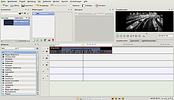
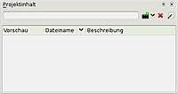
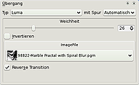
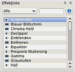
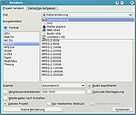
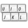

Kdenlive
Dieser Artikel wurde für die folgenden Ubuntu-Versionen getestet:
Ubuntu 16.04 Xenial Xerus
Ubuntu 14.04 Trusty Tahr
Zum Verständnis dieses Artikels sind folgende Seiten hilfreich:
Kdenlive  ist ein nichtlinearer Videoeditor für KDE. Mit Hilfe von Kdenlive ist es möglich, einfache bis komplizierte Videoschnitte durchzuführen. Es steht vom Funktionsumfang zwischen Anwendungen wie Kino auf der einen und professionellen Tools wie Jashaka bzw Cinelerra auf der anderen Seite. Es lässt sich sehr leicht bedienen und bietet dennoch Funktionen aus dem Profilager. Dieser Artikel erläutert nur einige grundlegende Bedienungsmöglichkeiten und soll nicht einen vollständigen Workflow abbilden, da dies den Rahmen sprengen würde.
ist ein nichtlinearer Videoeditor für KDE. Mit Hilfe von Kdenlive ist es möglich, einfache bis komplizierte Videoschnitte durchzuführen. Es steht vom Funktionsumfang zwischen Anwendungen wie Kino auf der einen und professionellen Tools wie Jashaka bzw Cinelerra auf der anderen Seite. Es lässt sich sehr leicht bedienen und bietet dennoch Funktionen aus dem Profilager. Dieser Artikel erläutert nur einige grundlegende Bedienungsmöglichkeiten und soll nicht einen vollständigen Workflow abbilden, da dies den Rahmen sprengen würde.
Das Programm ist auch zur Erstellung von Stop-Motion-Filmen geeignet.

Kdenlive unterstützt alle Formate, die mittels FFmpeg bzw. ab Ubuntu 14.04 mittels avconv gelesen bzw. geschrieben werden können. Daneben gibt es viele weitere Funktionen, unter anderem:
komplett frei konfigurierbare Oberfläche
Unterstützung von 4:3, 16:9, PAL, NTSC, HD-Formate
Import von DV-Kameras (via FireWire bzw. dvgrab), Webcams, Video4Linux-Geräte, Aufnahme des Desktops
Unterstützung für Jog-Shuttles
Installation¶
Zuerst muss man folgendes Paket installieren [1]:
kdenlive (universe)
 mit apturl
mit apturl
Paketliste zum Kopieren:
sudo apt-get install kdenlive
sudo aptitude install kdenlive
Es werden noch zusätzliche Pakete installiert, wie zum Beispiel FFmpeg und die KDE-Bibliotheken. Letztere ermöglichen, dass Kdenlive nicht nur auf dem KDE Desktop, sondern auch unter anderen graphischen Oberflächen wie etwa GNOME oder Xfce ausgeführt werden kann.
Nach der Installation kann man kdenlive starten[3]
Weitere Programme¶
In den Ubuntu-Quellen sind zusätzliche Pakete zur Mitinstallation vorhanden:
dvdauthor - zum Erstellen von DVD-Videos
dvgrab - um Videodateien über IEEE1394 oder USB zu importieren, siehe dvgrab
frei0r-plugins - Erweiterungs-APT für Videoeffekte
recordmydesktop
swh-plugins - LADSPA-Plugins von Steve Harris
DV-Import¶
Um Videos von einer DV-Kamera zu importieren bzw. exportieren, benötigt man folgende Pakete:
dvgrab (universe)
mit apturl
Paketliste zum Kopieren:
sudo apt-get install dvgrab
sudo aptitude install dvgrab
Zum Herausrechnen der Videos benötigt man:
libavformat-dev (universe)
libavcodec-dev (universe)
mit apturl
Paketliste zum Kopieren:
sudo apt-get install libavformat-dev libavcodec-dev
sudo aptitude install libavformat-dev libavcodec-dev
Zusätzliche Exportiermöglichkeiten¶
Um Videos in weiteren Formaten exportieren zu können, werden folgende Pakete benötigt:
libmp3lame-dev (multiverse)
libfaac-dev (multiverse)
libfaad-dev (multiverse)
libxvidcore4 (multiverse)
libx264-123 (multiverse, Ubuntu 12.04)
libx264-142 (multiverse, ab Ubuntu 14.04)
mit apturl
Paketliste zum Kopieren:
sudo apt-get install libmp3lame-dev libfaac-dev libfaad-dev libxvidcore4 libx264-123 libx264-142
sudo aptitude install libmp3lame-dev libfaac-dev libfaad-dev libxvidcore4 libx264-123 libx264-142
Bedienung¶
Beim ersten Programmstart zeigte der Konfigurationsassistent unter Ubuntu 12.04 an, welche Module installiert sind, welche Formate unterstützt werden und welche Pakete eventuell noch nachinstalliert werden sollten.
Durch die flexible Oberfläche von Kdenlive kann es vorkommen, das nicht alle Fenster zu sehen sind. Über den Menüpunkt "Ansicht" können die entsprechenden Dockfenster angezeigt werden. Diese können dann entweder als eigenständige Fenster agieren, oder aber im Programmfenster per Drag'n'Drop an anderen Dockfenstern angedockt werden.
Importieren von Dateien¶
 Um Video, Musik und Bilder in Kdenlive zu importieren gibt es mehrere Möglichkeiten. Über den Menüpunkt "Projekt" kann der gewünschte Inhalt gewählt werden. Eine weitere Möglichkeit ist es, die Daten mit Hilfe von Drag'n'Drop in den Projektinhalt zu ziehen. Alternativ kann der Inhalt über das Symbol "Datei hinzufügen" ausgewählt werden.
Bearbeitung von Clips¶
Wenn sich nun die Dateien im Projektinhalt befinden, klickt man auf den gewünschten Clip und kann sich diesen dann im Clipmonitor anschauen. Mit Hilfe der Tasten I und O kann man den In- und Outpoint setzen, welche den Anfang und das Ende des Clips bestimmen. Danach zieht man den Clip vom Clip-Fenster in die Zeitleiste, welche sich im Standardlayout unten befindet. Man kann nachträglich noch den Anfang und Ende des Clips bestimmen. Außerdem ist es möglich, Clips zu teilen, in dem man entweder das Teile-Clip-Werkzeug verwendet, oder den Clip markiert und dann via "Rechtsklick -> Schneide Clip" die Bearbeitung vornimmt.
Übergänge¶

Um einen Übergang zwischen zwei Videos zu erzeugen, lässt man diese in der Zeitleiste überlappen. Nun wählt man das gewünschte Video aus, auf das der Übergang angewendet werden soll. Durch einen Rechtsklick ( ) erscheint das Kontextmenü. Dort kann über "Übergang hinzufügen" der gewünschte Effekte gewählt werden. Möchte man im nach hinein diesen Effekt oder seine Parameter ändern, so ist dies über das Fenster "Übergang" möglich.
) erscheint das Kontextmenü. Dort kann über "Übergang hinzufügen" der gewünschte Effekte gewählt werden. Möchte man im nach hinein diesen Effekt oder seine Parameter ändern, so ist dies über das Fenster "Übergang" möglich.
Effekte hinzufügen¶
Möchte man Effekte auf die Clips legen, so markiert man den gewünschten Clip und nach einem Rechtsklick "Video-Effekt hinzufügen".  Alternativ kann darüber auch ein Audio-Effekt hinzugefügt werden, wenn man zum Beispiel den Ton langsam ausblenden möchte. Man kann nachträglich Effekt auch noch ändern oder entfernen. Zum Entfernen klickt man rechts auf den gewünschten Clip und sagt "Effekt löschen -> gewünschter Effekt".
Eine weitere Möglichkeit ist es, den entsprechenden Clip auszuwählen und dann über das Fenster "Effektliste" den Effekt hinzuzufügen. Alle verwendeten Effekte sind im "Effektmagazin" zu sehen und können darüber auch verändert werden.
Video exportieren¶
 Ist man mit seinem Werk zufrieden, kann das Video exportiert werden. Über das Menü "Projekt -> Rendern" kann das entsprechende Menü aufgerufen werden. Nun kann der gewünschte Codec - sofern installiert - gewählt werden, in dem das Video exportiert werden soll. Außerdem können dort weitere Parameter wie Bildgröße etc. festgelegt werden. Unter "Ziel" ist standardmäßig Dateirenderung angegeben. Dies kann dazu genutzt werden, um eine normale Datei zu erzeugen. Weitere Vorlagen wie z.B. die Exportmöglichkeiten für Webseiten sind ebenfalls hier hinterlegt. Unter dem Punkt "Ausgabedatei" muss nun noch ein passender Dateiname vergeben werden. Durch einen Klick auf "Starte Rendering" startet man den Vorgang. Falls man nur einen Bereich des Videos nur exportieren will, so setzt man entsprechend Inpoint und Outpoint in der Zeitleiste und wählt im Renderfenster den Punkt "Nur markiertes Teilstück" aus.
Hinweis:
In diesem Menüpunkt ist es auch möglich, eigene Videoformate zu erstellen. Dafür ist es aber nötig, die genauen Optionen von FFmpeg zu kennen.

Tastenkürzel¶
| Tastenkürzel | Funktion |
| Strg + ⏎ | Projekt rendern |
| ⇧ + R | Clip schneiden |
| Wiedergabe | |
| Strg + | Bereich abspielen |
| Alt + | Bereich wiederholen (Schleife) |
| J | schneller Rücklauf |
| ← | ein Bild zurück |
| ⇧ + ← | 1 Sekunde zurück |
| ⇧ + → | 1 Sekunde vorwärts |
| → | ein Bild vorwärts |
| L | schneller Vorlauf |
| I | setze Eingangspunkt |
| O | setze Ausgangspunkt |
Oberfläche¶
Kdenlive ist ein auf Qt4 basierendes Programm. Dadurch ist es möglich, die einzelnen Unteranwendungen frei im Programm zu platzieren. Jedes von ihnen hat eine Art Fensterdekoration. Durch ziehen und verschieben können diese an eine andere Stelle innerhalb der Anwendung abgelegt werden. Werden mehrere Objekte am selben Ort abgelegt, so werden Reiter hinzugefügt.
Problembehebung¶
Programmoberfläche nicht auf Deutsch¶
Wird das Programm unter einer anderen Oberfläche als KDE nachinstalliert, fehlen vermutlich einige Sprachpakete.
language-pack-kde-de
kde-l10n-de
mit apturl
Paketliste zum Kopieren:
sudo apt-get install language-pack-kde-de kde-l10n-de
sudo aptitude install language-pack-kde-de kde-l10n-de
Fehlender Eintrag im Startmenü¶
Es ist möglich, dass Kdenlive unter GNOME nach der Installation nicht im Startmenü erscheint. Das liegt meistens daran, dass die entsprechende .desktop-Datei, die für den Menüeintrag zuständig ist, nicht im richtigen Verzeichnis angelegt wurde. Um dies zu ändern, öffnet man ein Terminalfenster [2] und gibt die folgende Zeile ein:
sudo ln -s /usr/share/applnk/Multimedia/kdenlive.desktop /usr/share/applications/kdenlive.desktop
Kdenlive hängt bei der Wiedergabe¶
Bleibt Kdenlive bei der Videowiedergabe nach ein paar Sekunden hängen, sollte man das Paket libsdl1.2debian-pulseaudio installieren (sofern das System PulseAudio zur Wiedergabe benutzt).
DVD Assistent bricht ab mit Fehler "no video format specified for VMGM"¶
Seit der Einführung von dvdauthor-0.7 kann es vorkommen, dass der DVD-Assistent von Kdenlive im vorletzten Schritt "Erstelle DVD-Struktur" mit dem nachfolgenden Fehler abbricht:
STAT: fixed 7782 VOBUs INFO: dvdauthor creating table of contents INFO: Scanning /tmp/DVD/VIDEO_TS/VTS_01_0.IFO ERR: no video format specified for VMGM
Abhilfe ist wie unter http://kdenlive.org/forum/dvdauthor-07-incompatibility beschrieben durch Ausführen des nachfolgenden Befehls möglich:
echo PAL > ~/.config/video_format
Dieser Befehl legt PAL als Standardformat fest. Alternativ kann je nach Region auch "NTSC" festgelegt werden. Ein Neustart von kdenlive ist nicht erforderlich, das Ausführen des Befehls reicht aus und der DVD-Assistent sollte erfolgreich ausgeführt werden.
Links¶
Kdenlive – Der freie Videoeditor für Linux, Mac OS X und FreeBSD
 - Artikel Pro-Linux, 07/2012
- Artikel Pro-Linux, 07/2012Videobearbeitung
 Übersichtsartikel
Übersichtsartikel
- Erstellt mit Inyoka
-
 2004 – 2017 ubuntuusers.de • Einige Rechte vorbehalten
2004 – 2017 ubuntuusers.de • Einige Rechte vorbehalten
Lizenz • Kontakt • Datenschutz • Impressum • Serverstatus -
Serverhousing gespendet von